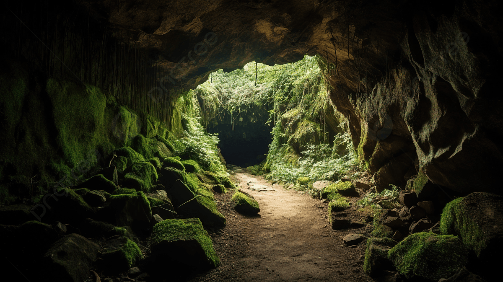

Ozora
Population: 5 000
Ozora is made up of two cities one is called lost and the other is called found. The roll of lost and the people in it is to find any lost souls and bring them back and prepare them to travel to found.
The main language there is Ozoran which is used so they can communicate through writing without people knowing what they are talking about. They can naturally comprehend any language.
is used so they can communicate through writing without people knowing what they are talking about. They can naturally comprehend any language.

All most people know about Ozora is that the entrance to the underworld is there and they can’t go there. They don’t even know the name so they call it either The Island of The Underworld or The Forbidden Land. Ozorars live in a more communist society governed by Ozoryth. Art wasn’t practiced there and everyone’s focus is their work. Ozoryth always gave them enough food water and shelter and he owned and controlled everything even their thoughts. He treated them more like puppets han people. Everything and everyone there were the exact same. Each baby born in Ozora is granted a tiny bit of Ozoryth’s power so they are ready to be one of his death slaves since the begging of their time.